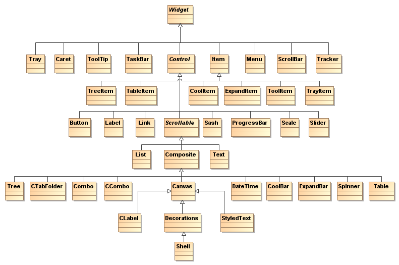

SWT & JFace


Fakultet tehničkih nauka u Novom Sadu
Katedra za informatiku
Sadržaj
- Uvod
- Shell, Display, Windows, Widgets
- Obrada događaja
- Layouts
- Grafika
- JFace Viewers
- Data Binding
Šta je SWT?
- Biblioteka za izradu GUI interfejsa u Javi.
- Heavyweight pristup – koriste se sistemske vizuelne komponente.
- Podrška za sve standardne komponente i obradu događaja.
- Rad sa slikama, fontovima. Alokacija i dealokacija resursa operativnog sistema.
SWT vs. Swing
- Za razliku od Swing-a koristi vizuelne komponente operativnog sistema na kome se izvršava.
- Swing koristi tzv. lightweight pristup – iscrtava sve komponente. Aplikacije izgledaju i ponašaju se isto bez obzira na OS. Troše više procesorskih resursa – sporije izvršavanje.
- SWT ima prirodan Look and Feel – korisnici ne osećaju razliku u odnosu na aplikacije pisane specijalno za njihov OS.
Šta je JFace
- SWT pruža punu kontrolu nad izradom interfejsa ali je nekad previše niskog nivoa.
- JFace je nadogradnja višeg nivoa – najčešći poslovi se obavljaju mnogo lakše nauštrb fleksibilnosti.
- JFace nije zamena za SWT. Najčešće se kombinuju.
JFace klase
- U eclipse dokumentaciji referenciraju se kao helper classes ili model-based adapters.
- Dele se na 4 kategorije:
- Viewers – Prikaz domenskih podataka u okviru standardnih SWT komponenti (MVC obrazac).
- Actions and Contributions – Pojednostavljuju i vrše organizaciju mehanizma obrade događaja.
- Image and Font registries – Upravljaju alokacijom i dealokacijom slika i fontova.
- Dialogs and Wizards – Proširuju mogućnosti SWT dijaloga za interakciju sa korisnicima.
SWT projekat
- URL projekta: http://www.eclipse.org/swt/
- Primeri: http://www.eclipse.org/swt/snippets/
Kreiranje SWT projekta
- U eclipse-u kreirati Java projekat i podesiti Build Path tako da uključi SWT biblioteke koje stižu uz eclipse.
- SWT biblioteka je zavisna od GUI biblioteke OS-a.
- Na primer, na linux-u SWT je implementiran preko GTK podsistema i eclipse priključci su:
plugins/org.eclipse.swt.gtk.linux.x86_xxxxx.jar
plugins/org.eclipse.swt_xxxxx.jar
Anatomija SWT programa – HelloSWT
public class HelloSWT {
public static void main(String[] args) {
Display display = new Display();
Shell shell = new Shell(display);
Text text = new Text(shell, SWT.CENTER);
text.setText("Hello SWT!");
text.pack();
shell.pack();
shell.open();
while(!shell.isDisposed()){
if(!display.readAndDispatch()){
display.sleep();
}
}
}
}
Anatomija SWT programa – Objašnjenje
- Display klasa – veza sa OS-om, alokacija GUI resursa, propagacija događaja na odgovarajuće vizuelne komponente. Koristi Java Native Interface (JNI) i OS specifičnu biblioteku.
- Shell klasa – predstavlja glavni prozor aplikacije.
Display klasa
Najvažnije metode:
- getCurrent() – static metoda koja vraća
Displayobjekat za koji je tekući thread EDT (Event Dispatching Thread). - syncExec/asyncExec(Runnable) – sinhrono/asinhrono izvršavanje koda na EDT.
- readAndDispatch() – prosleđuje događaje odgovarajućim komponentama.
- sleep() – čeka na pojavu događaja.
Shell klasa
- Brine se o aktivaciji, minimizaciji, maksimizaciji i zatvaranju glavnog prozora.
- Kontejner je za ostale vizualne komponente.
- Prozori najvišeg nivoa (top-level) su povezana sa instancom
Displayklase. - Sekundarni prozori (privremeni prozori, dijalozi i sl.)
nemaju direktnu vezu sa
Displayobjektom.
Stilovi komponenti
- Konstruktori vizuelnih komponenti (između ostalih i
Shell) primaju kao jedan od parametara stil. - Podrazumenavi stil za
ShelljeSWT.SHELL_TRIMkoji podrazumevaTITLE, MIN, MAX, RESIZE, CLOSEstilove. - Stilovi se mogu kombinovati
ORoperatorom (|). - Pojedine platforme ne podržavaju određene stilove i zbog toga se stil smatra samo preporukom.
Arhitektura SWT GUI-ja
Demonstracija HelloSWT programa
Kreiranje SWT/JFace programa
- Kod samostalnih aplikacija na Build Path je potrebno uključiti sledeće plugin-e iz eclipse-a:
org.eclipse.swt_xxxorg.eclipse.swt.[tehnologija]org.eclipse.jface_xxxorg.eclipse.jface.text_xxxorg.eclipse.jface.databinding_xxxorg.eclipse.equinox.common_xxxorg.eclipse.core.commands_xxx- Najbolje je u Eclipse-u kreirati User Library i dodati navedene biblioteke.
Kreiranje SWT/JFace programa – projekat
Prvi JFace program – HelloJFace
public class HelloJFace extends ApplicationWindow{
public HelloJFace() {
super(null);
}
@Override
protected Control createContents(Composite parent) {
Text text = new Text(parent, SWT.CENTER);
text.setText("Hello SWT and JFace!");
text.pack();
return parent;
}
public static void main(String[] args) {
HelloJFace awin = new HelloJFace();
awin.setBlockOnOpen(true);
awin.open();
Display.getCurrent().dispose();
}
}
Prvi JFace program – objašnjenje
- Klasa
ApplicationWindowpredstavlja glavni prozor aplikacije. - Ova klasa interno kreira
ShelliDisplayobjekte. - Sadržaj prozora se definiše redefinisanjem protected metode
createContents. - Metoda
open()prozora podrazumevano nije blokirajuća jer je moguće kreirati više prozora najvišeg nivoa. Ukoliko želimo daopen()poziv metode bude blokirajući, dok korisnik ne zatraži zatvaranje prozora, pozivamosetBlockOnOpen(true). - Na kraju je potrebno izvršiti dealokaciju svih zauzetih
resursa – poziv
Display.getCurrent().dispose().
Arhitektura JFace GUI-ja
Demonstracija HelloJFace programa
Hijerarhija prozora u JFace-u
SWT widget
- Objekat korisničkog interfejsa koji prikazuje informacije korisniku i/ili omogućava korisniku interakciju sa aplikacijom.
- Određeni widget-i se mogu ugrađivati jedni u druge
(kompozicija, videti klasu
Compositeu nastavku).
Wiget klasa
- Apstraktna superklasa za sve komponente grafičkog korisničkog interfejsa.
- Vrši unifikaciju hijerarhije nasleđivanja i nije namenjena za direktno nasleđivanje od strane krajnjih korisnika.
- Widget-i se kreiraju, po završenom poslu se dealociraju
(metodom
dispose). - Vrše notifikaciju događaja svim registrovanim osluškivačima.
Najvažnije metode Widget klase
- setData(String, Object) - Pridružuje objekat widget-u.
- getData() - Vraća sve pridružene objekte.
- getData(String) - Vraća pridruženi objekat identifikovan stringom.
- getStyle() - Vraća
intkoji opisuje stil widget-a. - getDisplay() - Vraća
Displayobjekat pridružen widget-u. - dispose() - Oslobađa sistemske resurse zauzete widget-om.
- isDispose() - Da li je dealokacija obavljena?
Hijerarhija Widget naslednika
Control klasa
- Apstraktna superklasa za sve komponente grafičkog korisničkog interfejsa koji imaju direktnu reprezentaciju unutar operativnog sistema.
- Čuva referencu na objekat (ref. handle) koji predstavlja objekat OS-a.
- Ima svoju preferiranu veličinu.
Metode Control klase za rad sa veličinom
- getSize() - Vraća Point objekat koji opisuje veličinu kontrole.
- setSize(int, int) - Postavlja veličinu kontrole.
- setSize(Point) - Postavlja veličinu kontrole.
- computeSize(int, int) - Vraća dimenzije potrebne za pun prikaz kontrole.
- computeSize(int, int, boolean) - Vraća dimenzije potrebne za pun prikaz kontrole, i prosleđuje informaciju da je došlo do promene kontrole.
- pack() - Postavlja veličinu na preferiranu.
- pack(boolean) - Postavlja veličinu na preferiranu uz indikaciju da je došlo do promene osobina kontrole.
Metode Control klase za rad sa lokacijom komponente
- getLocation() - Vraća relativnu poziciju komponente u odnosu na roditeljsku.
- setLocation(int, int) - Postavlja relativnu poziciju komponente u odnosu na roditeljsku.
- getBounds() - Vraća veličinu i poziciju u odnosu na roditeljsku komponentu.
- setBounds(int,int,int,int) - Postavlja veličinu i poziciju u odnosu na roditeljsku komponentu.
- toControl(int,int) - Konvertuje koordinate Display-a u relativne koordinate kontrole.
- toControl(Point) - Konvertuje koordinate Display-a u relativne koordinate kontrole.
- toDisplay(int,int) - Konvertuje koordinate kontrole u relativne koordinate Display-a.
- toDisplay(Point) - Konvertuje koordinate kontrole u relativne koordinate Display-a.
Composite klasa
- Omogućava "ugradnju" vizualnih komponenti jedne u druge.
- Svaki
Compositeobjekat ima listu svojih podkomponenti. Compositeje kontrola pa može da se nađe svuda gde se mogu naći druge vrste kontrola.- Nasleđuje
Scrollabletako da svaki kompozit može imati scrollbar-s.
Najvažnije metode Composite klase
- getChildren() - Vraća niz podkomponenti.
- getLayout() - Vraća objekat zadužen za prostorno raspoređivanje komponenti.
- setLayout(Layout) - Postavlja objekat zadužen za prostorno raspoređivanje komponenti.
- layout(...) - Vrši prostorno raspoređivanje children elemenata upotrebom pridruženog Layout-a.
- getTabList() - Vraća niz kontrola u skladu sa njihovim Tab rasporedom.
- setTabList(Control[]) - Postavlja Tab raspored kontrola.
Obrada događaja
Obrada događaja
- Događaji mogu biti inicirani od strane korisnika (npr. klik mišem, pritisak taster) ali mogu biti izazvani i nezavisno od korisnika.
- Događaje iz OS-a isčitava
Displayobjekat u metodi readAndDisplatch. - Ukoliko postoji događaj,
Displayga šaljeShellobjektu najvišeg nivoa koji je "spojen" za datiDisplayobjekat. Shellodređuje kojemWidget-u treba da prosledi događaj.Widgetobaveštava sve osluškivače da se događaj desio.
Propagacija i obrada događaja
Osluškivači – Listeners
- SWT omogućava definisanje dve vrste osluškivača: tipizirane i netipizirane.
- Netipizirani osluškivači:
- Implementiraju
org.eclipse.swt.widgets.Listenerinterfejs koja definiše metoduhandleEvent(Event). - "Kače" se na
Widget-e putem metodeaddListener(int eventType, Listener) - Koriste generičku
Eventklasu. - Tipizirani osluškivači:
- Osluškivači "višeg nivoa".
- Implementiraju neki od
*Listenerinterfejsa koji nasleđujuorg.eclipse.swt.internal.SWTEventListener. - "Kače" se na
Widget-e putem metoda oblikaadd*Listener(). - Koriste odgovarajuće
*Eventklase – svaki listener ima svojuEventklasu.
Događaji – Events
- Događaji su opisani instancama klase
Eventili naslednicamaTypedEvent. - Pored specifičnih informacija sadrže sledeće:
- display – Display objekat gde je događaj nastao.
- widget – Widget koji je izazvao događaj.
- time – vreme u koje se događaj desio.
- data – objekat koji predstavlja informacije specifične za aplikaciju.
Podrazumevana implementacija Listener interfejsa – Adapteri
- Pojedini osluškivači imaju više metoda, ali nam često nisu sve potrebne.
- Možemo kreirati objekat sa praznim telima metoda ili, jednostavnije, koristiti odgovarajuće adapter klase koje impelementiraju dati interfejs i definišu podrazumevanu implementaciju za sve metode.
- Primer:
TreeListener→TreeAdapter
JFace nadogradnja obrade događaja
- Isti odgovor može biti primenjen na različite događaje.
- Potrebno je razdvojiti obradu događaja od GUI komponenti koje ih generišu.
- JFace nudi ove mogućnosti kroz koncepte Actions i Contribitions.
- JFace polazi od sledeće tri pretpostavke da bi pojednostavio obradu događaja:
- Korisničke akcije će najčeše uključivati dugmadi, toolbar-ove i menije.
- Svaka komponenta će imati samo jedan pridruženi događaj.
- Svaki događaj će imati jedan obrađivač događaja.
Odgovor na događaje – Akcije
- Akcije predstavljaju ne-GUI komponentu komande izazvane od strane korisnika.
- Realizovani su kroz Action klasu koja implementira IAction interfejs.
- Objedinjuju obradu događaja (run metoda), stanje, opis, sličicu, tooltip, akcelerator i sl.
- Dodaju se na toolbar, meni ili statusnu liniju metodom IContributionManager.add.
ContributionItem i ContributionManager
- Predstavljaju objekte koji se dodaju na deljene elemente korisničkog interfejsa (toolbar, meni, statusnu liniju).
- Deljeni objekti UI-ja nasleđuju
ContributionManagerklasu (implementirajuIContributionManager). ActionContributionItem– wrapper zaActionobjekat koji se dodaje naIContributionManager.ContributionManagerpredstavlja kontejner zaContributionItemobjekte.
Primer saradnje Action, ContributionItem i ContributionManager objekata
Dva načina dodavanja ActionContributionItem-a na ContributionManager
- Pozivanjem add metode
ContributionManager-a. - Pozivanjem fill metode
ActionContributionItem-a. - Realizacija zavisi od objekta u koji se dodaje. Npr. na
toolbar-u ili
Compositeobjektu može se prikazati kao dugme dok će na meniju biti stavka menija.
Prostorno raspoređivanje – Layout
Prostorno raspoređivanje – Layout
- Podrška za displeje različitih dimenzija kao i za dinamičku promenu geometrije kontejnerskih komponenti.
- Layout – instanca ove klase upravlja veličinom i rasporedom
podkomponenti
Compositeobjekta. - setLayout(Layout)
Compositeobjekta postavljaLayout.
Osnovne Layout naslednice
- FillLayout – raspoređuje komponente sleva nadesno ili od gore prema dole.
- RowLayout – raspoređuje komponente u redove.
- GridLayout – tabelarno raspoređivanje.
- FormLayout – raspoređivanje kroz definisanje zavisnosti između susednih komponenti.
Konfiguracija kontrola za layout
- Objekti
Controlklase koje se dodaju uCompositemogu primiti konfiguraciju sa setLayoutData(Object) pozivom. - Ovu konfiguraciju može koristiti
Layoutobjekat prilikom izračunavanja veličina i pozicija.
Primeri GridLayout i FormLayout
Grafika u SWT-u
Grafika u SWT-u
- Za crtanje po kontroli koristi se Graphic Context – klasa GC.
- Primitive za crtanje GC klase: drawLine, drawOval, drawPolygon itd.
- Pri kreiranju GC objektu prosleđujemo Drawable.
Drawable hijerarhija
Obrada Paint događaja
- Control instance mogu da registruju PaintListener objekte i delegiraju svoje iscrtavanje.
- PaintListener-i implementiraju paintControl metodu koja se poziva kada je iscrtavanje potrebno i kojoj se prosleđuje PaintEvent objekat.
- PaintEvent sadrži GC kontrole za koju je zahtevano iscrtavanje kao i oblast koja treba da se "osveži".
Primeri DrawAlpha i Scribble
JFace Viewers
JFace Viewers
- Okvir za rad sa komponentama za prikaz strukturiranih podataka (stabla, liste, tabele).
- Koristi MVC pristup.
- Gradi se na bazi odgovarajućih SWT widget-a.
- Koristi Provider obrazac.
Viewer klasa
- Predstavlja apstrakciju vizualne komponente i podataka koje prikazuje i opisuje View deo MVC obrasca.
Viewer-i koristeProvider-e za dobavljanje informacija koje treba da prikažu.- Najvažniji
Provider-i implementiraju interfejse IContentProvider i IBaseLabelProvider. IContentProvider-i se bave strukturom koja se prikazuje.IBaseLabelProviderse bave vizuelnim karakteristikama - labele i ikone.- Postoje i drugi
Provider-i: ISelectionProvider, IColorProvider, IFontProvider itd.
Dijagram Viewer-a i Provider-a
JFace primeri
http://wiki.eclipse.org/JFaceSnippetsPrimeri sa Viewerima sa JFaceSnippets-a: SimpleTreeViewer, VirtualTree, TableViewerShowHide, TableViewerAlternatingColors, TreeCustomMenu, StyledCellLabel, SimpleCellEditor, DoubleClickCellEditor, CellEditorContentProposal...
Data Binding
JFace Data Binding
Literatura
- M. Scarpino, S. Holder, S. Ng, and L. Mihalkovic, Swt/jface in action: Gui design with eclipse 3.0 (in action series), Manning Publications Co., 2004